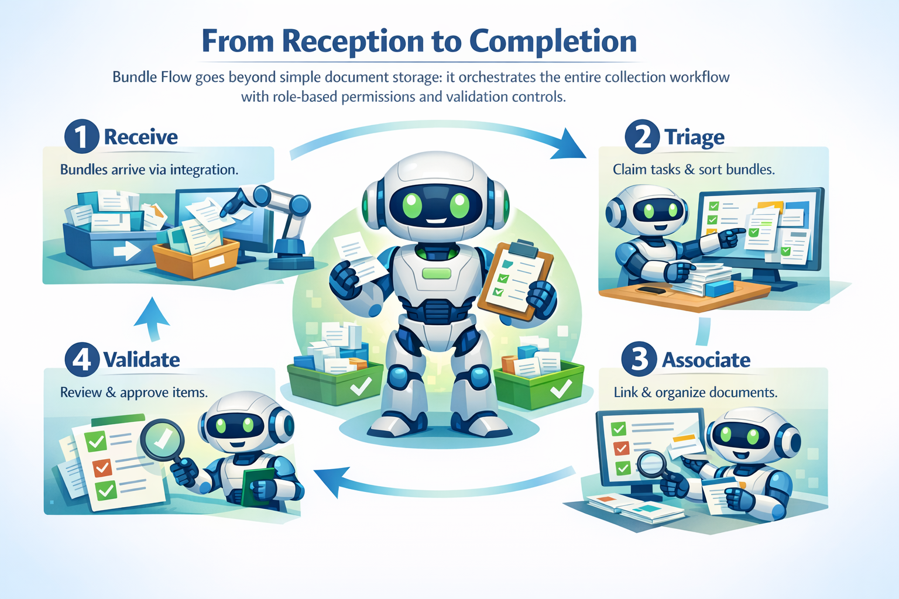

Gérer la collecte de documents ne devrait pas signifier se noyer dans les e-mails, les tableurs et les délais manqués...
...mais c'est exactement ce qui se passe sans les bons outils.
Bundle Flow est un service web de collecte et de contrôle de documents fondé sur des listes de contrôle avec un système de permissions basé sur les rôles.
Demander une démoLa collecte de documents traditionnelle est dispersée, manuelle et sujette aux défaillances
Les documents arrivent par e-mail, courrier et portails sans source de vérité unique.
Vérifier la complétude nécessite d'incessants allers-retours, de multiples contrôles et des vérifications manuelles à chaque étape.
Aucune visibilité claire sur ce qui manque avant que les délais n'approchent.
Difficile de prouver quand les documents ont été reçus et par qui.
Bundle Flow transforme la collecte de documents dispersée en un processus structuré et auditable

Les bundles arrivent via intégration, créant automatiquement des tâches dans la file de triage. Aucun document n'est jamais perdu.
Postmaster prend en charge les tâches et associe les bundles à la liste de contrôle appropriée.
Postmaster lie le contenu du bundle aux éléments de la liste de contrôle, s'assurant que chaque document a un objectif.
Les listes de contrôle valident la qualité des documents avant de marquer les éléments comme valides et de terminer le workflow.
Découvrez comment Bundle Flow transforme la collecte de documents dans différents secteurs
Collectez et validez les documents requis pour les dossiers de prêt. Suivez les justificatifs de revenus, pièces d'identité et preuves de garantie avec des listes de contrôle claires et des contrôles de validation.
Rassemblez les documents de conformité des nouveaux fournisseurs. Gérez certificats, polices d'assurance et documents juridiques avec un suivi des parties et un accès basé sur les rôles.
Suivez les preuves médicales et la documentation justificative pour les sinistres. Utilisez des listes de contrôle pour vérifier l'authenticité et la complétude des documents avant approbation.
Assurez la complétude de la documentation pour les audits. Les journaux d'audit complets prouvent quand les documents ont été reçus, qui les a traités et quelles validations ont été effectuées.
Nous répondons aux défis clés rencontrés par les entreprises dans la gestion de la collecte de documents
Visibilité complète sur chaque action. Sachez quand les documents sont arrivés, qui les a traités et quelles décisions ont été prises.
Choisissez les options de déploiement qui vous conviennent — infrastructure sur site ou cloud privé selon vos exigences spécifiques.
Utilisez les API REST et les messages Kafka pour vous intégrer aux systèmes existants, ERP et services de stockage de documents.
Définissez des workflows de validation avec des contrôles de cohérence, de conformité et d'authenticité. Assurez-vous que les documents respectent les standards de qualité.
Suivez plusieurs parties par liste de contrôle avec des rôles spécifiques. Importez les données des parties depuis les systèmes CRM externes automatiquement.
Exportez, importez et versionnez votre configuration. Gérez les modèles, bibliothèques d'éléments et paramètres dans tous les environnements.
Transformez la collecte de documents chaotique en workflows contrôlés et auditables
La création automatique de tâches pour chaque bundle entrant garantit qu'aucun document n'est jamais perdu ou oublié.
Journaux d'audit complets pour la conformité et le dépannage. Chaque action est enregistrée et traçable.
Six rôles avec des capacités additives. Attribuez exactement les bonnes permissions à chaque utilisateur.
Des listes de contrôle de validation optionnelles guident les utilisateurs dans la vérification des documents avec des contrôles structurés.
Suivez plusieurs parties par liste de contrôle avec des rôles spécifiques pour des relations commerciales complexes.
Des modèles réutilisables construits à partir d'une bibliothèque d'éléments centralisée assurent la cohérence des workflows.
Découvrez comment Bundle Flow peut rationaliser vos workflows et assurer la conformité.
Demander une démo